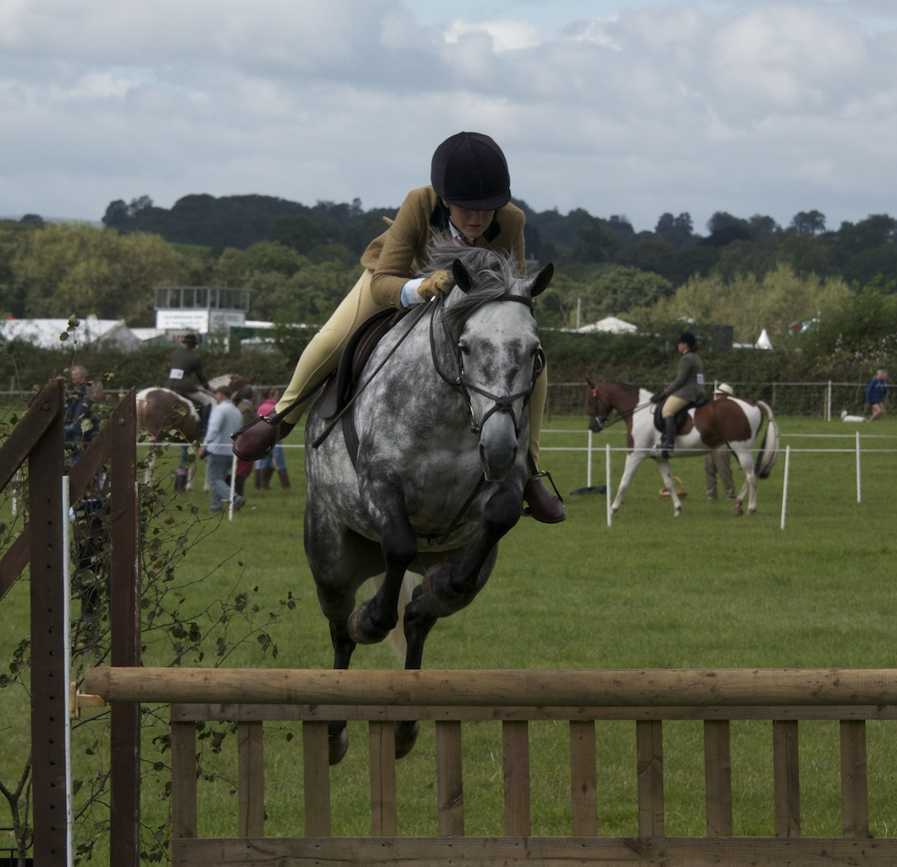

Luke Dee gana el Stal Hendrix Grand Prix CSI3* de Kessel con Sergio Álvarez Moya en el podio

Luke Dee se llevó el Stal Hendrix CSI3* Grand Prix del JPM International de Kessel con Gangster WW tras un desempate de máxima exigencia en el que el español Sergio Álvarez Moya firmó la segunda plaza con Be Blue. Dee paró el crono en 38,49 segundos sin penalización para sellar el triunfo en el 1,55 metros de la…
Luke Dee se llevó el Stal Hendrix CSI3* Grand Prix del JPM International de Kessel con Gangster WW tras un desempate de máxima exigencia en el que el español Sergio Álvarez Moya firmó la segunda plaza con Be Blue. Dee paró el crono en 38,49 segundos sin penalización para sellar el triunfo en el 1,55 metros de la pista neerlandesa.
Álvarez Moya quedó a apenas un segundo del ganador con un crono de 39,48 segundos, también con el cero al pleno, en una actuación que confirma el buen estado de forma del jinete asturiano y de su binomio con Be Blue. El podio lo completó el belga Niels Bruynseels con Chacco's Lando OL, tercero con 39,52 segundos, en un desempate apretadísimo en el que tres binomios se mantuvieron sin falta.
El segundo puesto de Álvarez Moya evidencia el ajuste fino del binomio sobre alturas máximas. El jinete sigue sumando resultados de podio en el circuito CSI3* de Países Bajos en pleno arranque del verano europeo.
El JPM International de Kessel es una de las paradas regulares del circuito CSI3* neerlandés, con un Gran Premio patrocinado por Stal Hendrix que reúne cada año a referentes habituales de la región. La victoria de Luke Dee y el podio del español dejan una jornada redonda para el calendario internacional de salto.
📊 Resultados completos
— Redacción de Hípica al Día